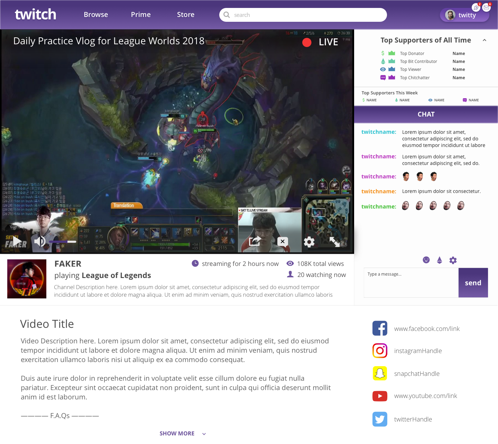
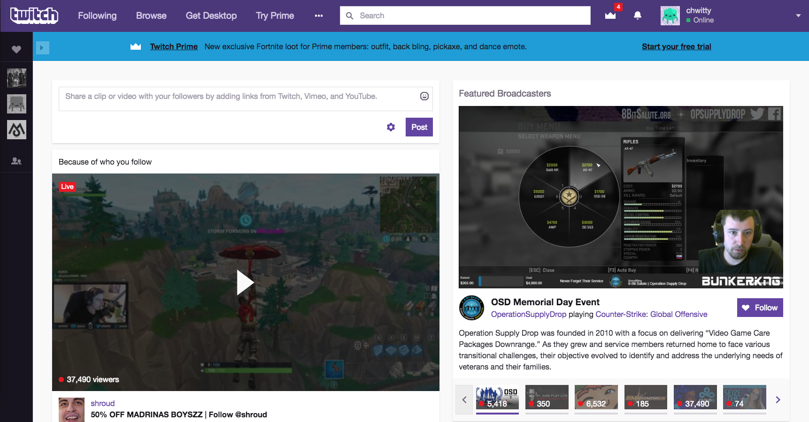
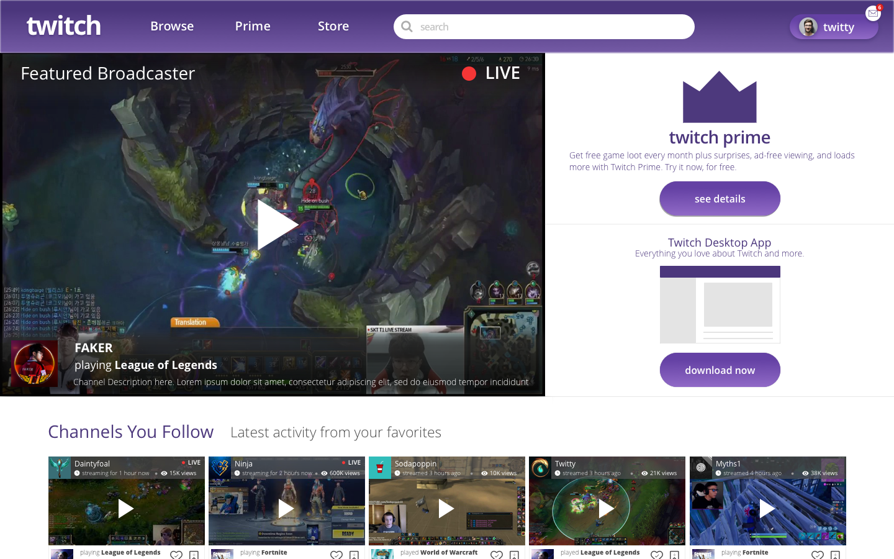
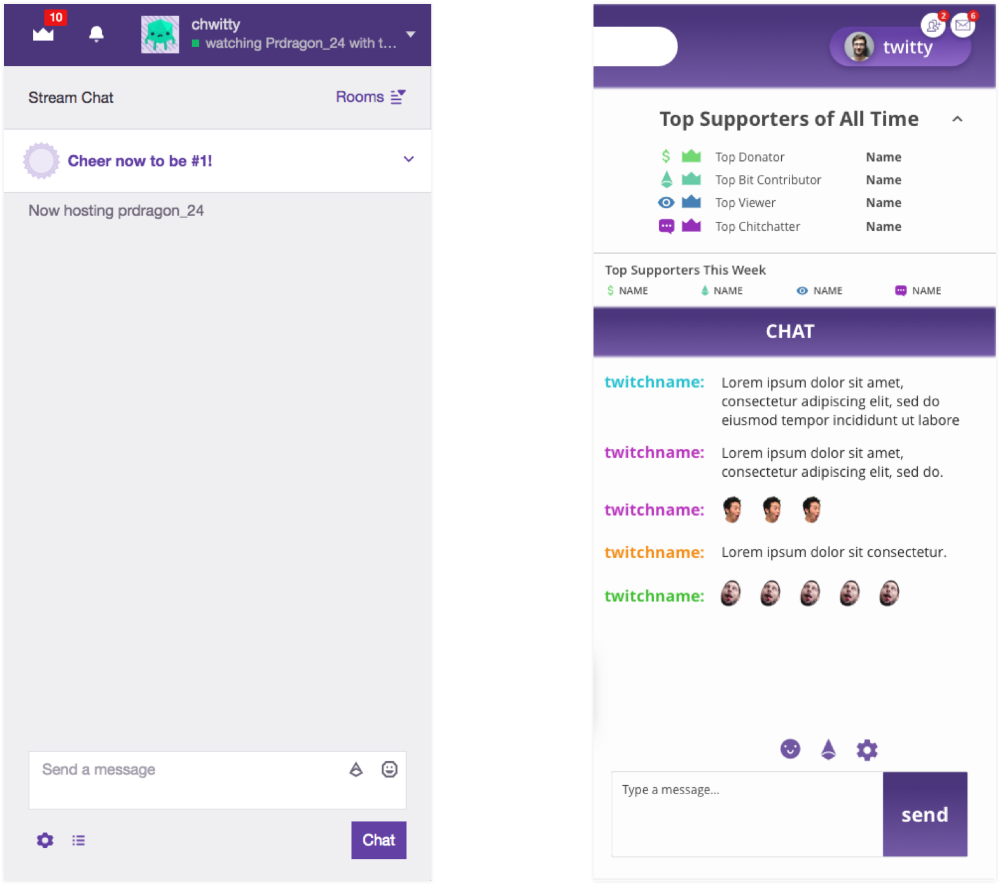
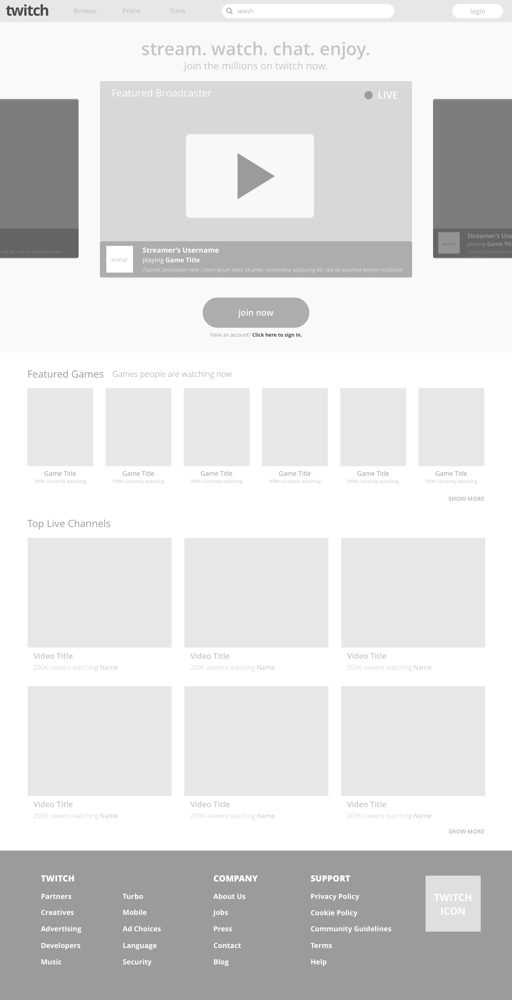
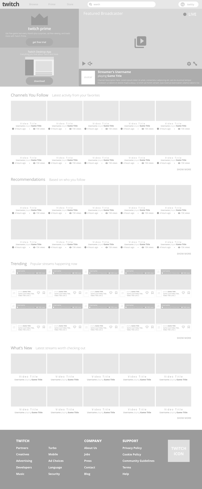
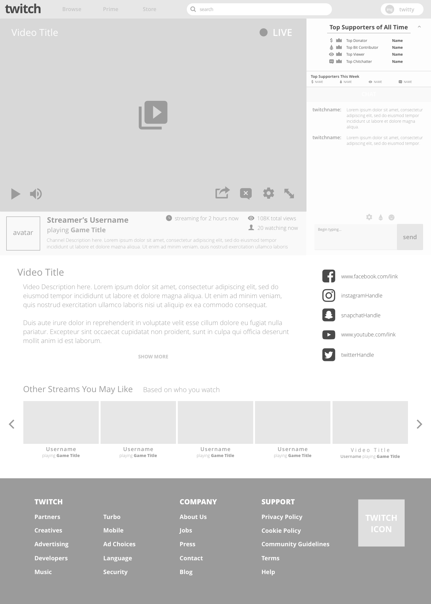
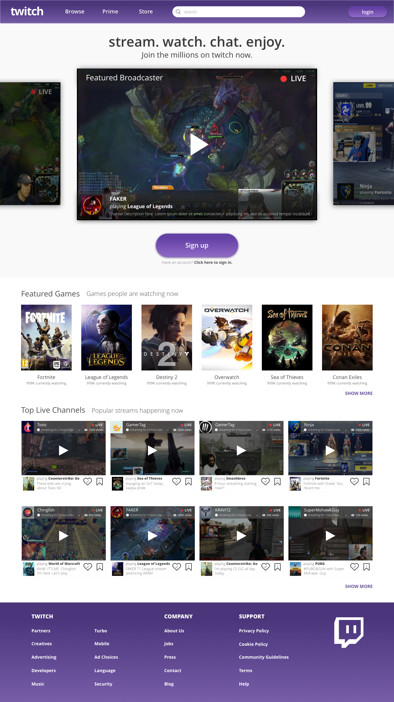
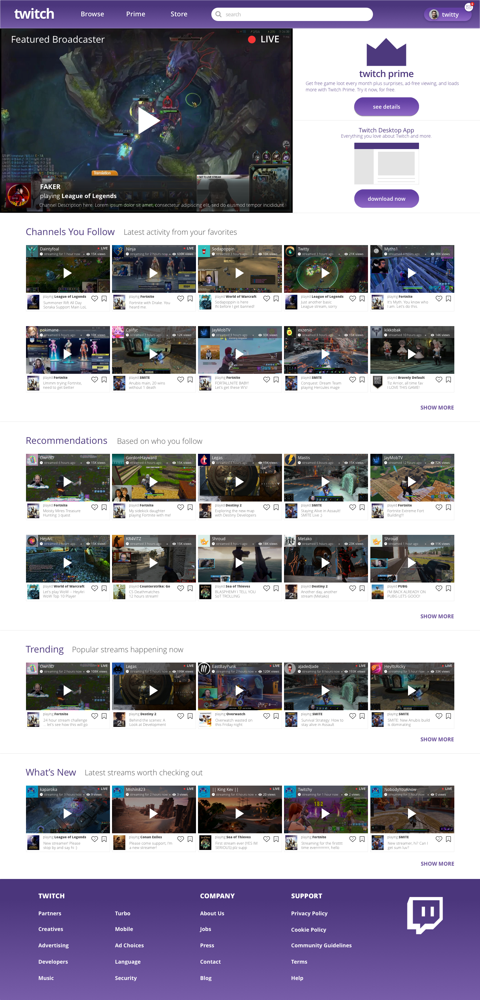
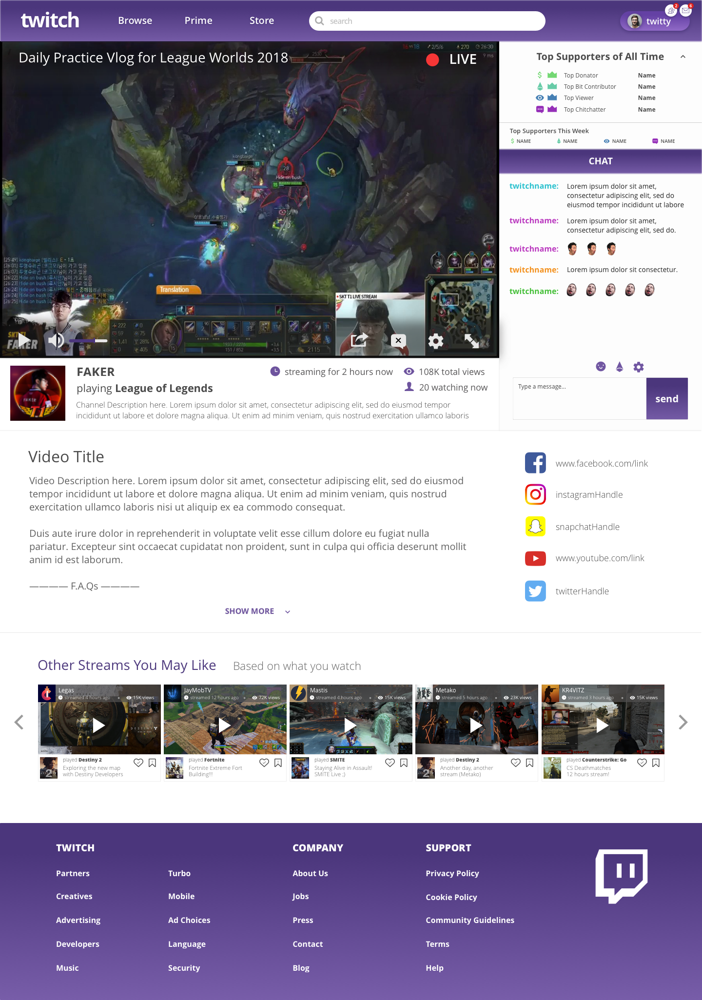

Twitch
Website Redesign
My most recent personal project: redesigning the Twitch web interface.
I became a heavy user of the platform when my older brother started streaming on Twitch and felt inspired to re-imagine how an update of UI would look.
My most recent personal project: redesigning the Twitch web interface. I became a heavy user of the platform when my older brother started streaming on Twitch and felt inspired to re-imagine how an update of UI would look.
Image above: Twitch Web - Stream View Redesign
For this project, I worked on the homepage and streamview as well as a landing page for Twitch as theirs currently is nonexistent.
Throughout my design process, I often showed my work to my 4 brothers, who are avid Twitch users. Their feedback was invaluable and proved to help a lot in the final design.
For this project, I worked on the homepage and streamview as well as a landing page for Twitch as theirs currently is nonexistent. Throughout my design process, I often showed my work to my 4 brothers, who are avid Twitch users. Their feedback was invaluable and proved to help a lot in the final design.
Home: Before
Image above: Twitch Home - Before
Home: After
Image above: Twitch Home - After
Chat: Before & After
Image above: Twitch Chat - Before & After
This side-by-side provides a stark comparison between the current, quite bar Twitch chat UI and the new design I proposed. In the new chat design, I included a section dedicated to showcasing a streamer's Top Supporters and to display the 'Top Supporters of the Week' to encourage more streamer support from viewers; something I took from reading on UX & gamification.
And, for the cases of super active chats with tons of incoming messages that would require more chat space, I also included the option to hide the 'Top supporters' section.
WIREFRAMES
  FINAL MOCKS
  FINAL THOUGHTS
Was super fun to work on this as a personal project because there were so many possibilities and many different routes I could have gone in terms of how the landing and home page would look like. I enjoyed giving Twitch a "revamp". I tried not to take away from what Twitch has currently in terms of their brand but there are some changes that would seem drastic to their current design i.e., hiding tons of their buttons and views.
A next step would be to show more current users of Twitch and get their feedback to refine it a bit more. Then it would be nice to run an A/B test and get it in front of someone on the design team @ Twitch :)
Thanks for checking this project out
- Amy